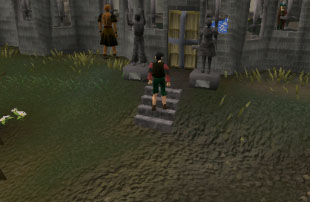
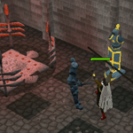
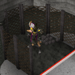
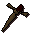

")
Melee - Warriors' Guild
Introduction

Harrallak Menarous has founded a new guild for melee warriors after his numerous treks around the world. Strange devices for animating armour, huge catapults that fling missiles at you and dummies to test your Attack skills are just a few of the many things you can train on here.
Explore the guild and meet the staff while honing your melee skills and maybe you could earn enough tokens to enter the cage on the top floor...
Location
The Warriors' Guild is a massive building located just west of Burthorpe. You can get to Burthorpe by using a charge on a gaming necklace, if you have one.
If you do not have a gaming necklace, you can always walk to Burthorpe. Burthorpe is located north of Taverley, which is a short walk north-west of Falador.
If you are coming from Catherby or the west, you will need to navigate over or under White Wolf Mountain to get to Burthorpe.
Requirements
Only true warriors may enter this guild, so you will find that you will not be allowed to enter unless you meet one of the following criteria: level 99 Attack, level 99 Strength, or a combined Strength and Attack level of at least 130.
Recommended Items
As you will be participating in combat-related games, you will find that you take damage if unprepared. For this it is best to take good armour and weaponry. Please note that if you die in the Warriors' Guild, you will not retain your items.
Games of the Guild
There are many games to participate in at the Warriors' Guild, from which you can earn tokens (explained a little later in this guide). As well as this, there are many shops to buy items, food or potions, there is even a bank!
This massive guild has three floors, which are outlined below.
Ground floor
Activities:
- Dummy Room - see 'Activities' section below.
- Animation Room - see 'Activities' section below.
Shops/other:
- Bank
- Lidio's food shop sells trout, bass, pizza, cheese potatoes and stew.
- Lilly sells Attack, Strength and Defence potions for a very fair price.
First floor
Activities:
- Catapult Room - see 'Activities' section below.
- Shot Put Room - see 'Activities' section below.
- Jimmy's Challenge - see 'Activities' section below.
Shops/other:
- The Armoury on this floor has a large stock of battleaxes, swords, daggers, maces, two-handed swords, chainbody armour and medium helmets.
Top floor
This is what the Warriors' Guild is all about: earning your tokens so you can speak with Kamfreena and earn time and the right to enter the room containing the cyclopes.
For more information about earning tokens to enter this room, read on...
The Games
Animation room (ground floor)

As you are fighting your armour, there is a small chance of losing a piece, so make sure you only use items that you are willing to lose or can easily replace. The stronger the material you are fighting, the less chance there is that it will be destroyed.
To make your armour live, bring a full helm, platebody, and platelegs and use any piece with the animator. Make sure you only bring standard armour, as using other armour (trimmed, white, etc.) will not work. If you manage to defeat your armour, you can pick it up again, along with the tokens you earn for defeating it.
| Armour type | Bronze | Iron | Steel | Black | Mithril | Adamant | Rune |
| Combat level | 11 | 23 | 46 | 69 | 92 | 113 | 138 |
Dummy room (ground floor)
In this room you are required to test your abilities in attack styles. Dummies will appear and you will have to act quickly and choose the correct attack style in order to whack them successfully.
For each dummy you correctly hit, you will be awarded 15 Attack experience, as well as Warriors' Guild tokens. Be careful when you are attacking, if you get it wrong the effects can be stunning and you’ll be the dummy!
There is a poster in the entrance room and in the room itself outlining what attack styles you will need to use on each dummy.
The dummies will popup randomly, but each style will always appear in the same place, so if you memorise the location of each one, and each style needed to hit it, then you can quickly change styles to maximise your tokens.
Catapult room (First floor)
Dwarves are short and angry, and this one likes to throw large objects at humans.
You will need to speak with the dwarf outside this room to receive your two-handed defensive shield. This shield can only be equipped in the target area of the Warriors' Guild, nowhere else.
When equipped, make sure you act quickly and look at the ammunition being hurled at you to select the appropriate defence style to use with your shield. Each successful defence grants 10 Defence experience and some Warriors' Guild tokens.
Shot put room (First floor)

What technique will you use? While your run energy holds out you can earn tokens and Strength experience depending upon how far you manage to throw a shot. Go on, give it a go!
If you are having trouble with throwing shots, you can get a pestle and mortar and use them with some ashes. Doing so will create ground ashes which will help your efforts in this game if you dust your hands with them.
Jimmy (First floor)
![[image]](../../img/main/kbase/minigames/warriors_guild/jimmy.gif) Jimmy is by no means the soberest person in the Warriors' Guild. He was meant to be guarding the store room on the first floor, but ended up popping in for a drink or two. When Jimmy gets drunk, he gets quite competitive and loves to show off his Strength, so be prepared to use your Strength in a drunken challenge to earn some points!
Jimmy is by no means the soberest person in the Warriors' Guild. He was meant to be guarding the store room on the first floor, but ended up popping in for a drink or two. When Jimmy gets drunk, he gets quite competitive and loves to show off his Strength, so be prepared to use your Strength in a drunken challenge to earn some points!
Rewards
As you have probably gathered, you will be rewarded with tokens from all the activities in the Warriors' Guild. If you head to the top floor, you can speak with Kamfreena who will explain how you can use these tokens to get the ultimate prize: defenders.
Defenders are off-hand weapons that are wielded in the shield slot and provide Attack bonuses. To earn a defender you must go into the room on the top floor and battle the cyclopes, which will drop defenders on the odd occasion. For every minute you are in the room, ten tokens will crumble away, so ensure you have a good amount if you want to stay a long time.
The first defender you get will be bronze. When you have this, return to Kamfreena and show her it. When you enter again, she will say that the cyclopes will now drop the next one up (iron). Again, you will have to kill them until you are lucky enough to receive this drop. Continue this for steel, black, mithril and adamant to finally get to rune.
Important: If you die and drop your defender, you will need to start over. Because of this, it is wise to keep the other defenders in your bank, so you can show Kamfreena and start on the defender you dropped. For example, if you lose your rune defender, but have an adamant defender in the bank, you can show her it and only have to work for the rune one, not all of them again.
| Defender | Level Required |
||||||||||||||||||
| Attack Bonuses | Defence Bonuses | Other | |||||||||||||||||
![[Image: Stab]](../../img/main/kbase/table_text/stab1.gif "Stab") |
![[Image: Slash]](../../img/main/kbase/table_text/slash1.gif "Slash") |
![[Image: Crush]](../../img/main/kbase/table_text/crush1.gif "Crush") |
![[Image: Magic]](../../img/main/kbase/table_text/magic1.gif "Magic") |
![[Image: Range]](../../img/main/kbase/table_text/range1.gif "Range") |
|
|
|
|
|
![[Image: Summoning]](../../img/main/kbase/table_text/summoning1.gif "Summoning") |
![[Image: Strength]](../../img/main/kbase/table_text/strength1.gif "strength") |
![[Image: Prayer]](../../img/main/kbase/table_text/prayer1.gif "Prayer") |
|||||||
|  Bronze defender (m) |
1 1 |
+ 3 | + 2 | + 1 | - 3 | - 2 | + 3 | + 2 | + 1 | - 3 | - 2 | + 1 | + 0 | + 0 | |||||
![[image]](../../img/main/kbase/minigames/warriors_guild/iron_defender.gif) Iron defender (m) |
1 1 |
+ 5 | + 4 | + 3 | - 3 | - 2 | + 5 | + 4 | + 3 | - 3 | - 3 | + 2 | + 0 | + 0 | |||||
![[image]](../../img/main/kbase/minigames/warriors_guild/steel_defender.gif) Steel defender (m) |
5 5 |
+ 7 | + 6 | + 5 | - 3 | - 2 | + 7 | + 6 | + 5 | - 3 | - 2 | + 3 | + 1 | + 0 | |||||
![[image]](../../img/main/kbase/minigames/warriors_guild/black_defender.gif) Black defender (m) |
10 10 |
+ 9 | + 8 | + 7 | - 3 | - 2 | + 9 | + 8 | + 7 | - 3 | - 2 | + 4 | + 2 | + 0 | |||||
![[image]](../../img/main/kbase/minigames/warriors_guild/mithril_defender.gif) Mithril defender (m) |
20 20 |
+ 10 | + 9 | + 8 | - 3 | - 2 | + 10 | + 9 | + 8 | - 3 | - 2 | + 5 | + 3 | + 0 | |||||
![[image]](../../img/main/kbase/minigames/warriors_guild/adamant_defender.gif) Adamant defender (m) |
30 30 |
+ 13 | + 12 | + 11 | - 3 | - 2 | + 13 | + 12 | + 11 | - 3 | - 2 | + 6 | + 4 | + 0 | |||||
![[image]](../../img/main/kbase/minigames/warriors_guild/rune_defender.gif) Rune defender (m) |
40 40 |
+ 20 | + 19 | + 18 | - 3 | - 2 | + 20 | + 19 | + 18 | - 3 | - 2 | + 8 | + 5 | + 0 | |||||

More articles in
Melee
|
|
|
Further Help
If this article does not help you, you may find the following sections of the RuneScape site helpful:
|
|